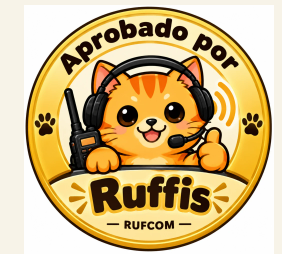

Hazla tú mismo
Flower Pot VHF
Simple, económica y confiable. RUFCOM ha construido versiones con 4 m y 14 m de cable, ambas con excelente desempeño.
- ✔ PVC de aprox. 1 metro
- ✔ 25 mm de diámetro
- ✔ 457 mm + 447 mm
- ✔ Choke de 9 vueltas

Antenas
Dos caminos: construir una o comprar una muy versátil.
Una buena antena puede cambiar mucho más tu experiencia que simplemente comprar una radio más cara.

Hazla tú mismo
Simple, económica y confiable. RUFCOM ha construido versiones con 4 m y 14 m de cable, ambas con excelente desempeño.

Compra lista para montar
Antena móvil dual banda con montaje NMO. RUFCOM la recomienda por su versatilidad para auto y para instalaciones fijas usando un plano de tierra adecuado.
Para el auto: montaje NMO magnético adecuado para el techo u otra superficie metálica.
Para balcón o techo: kit de plano de tierra con radiales que convierta una antena móvil NMO en una instalación tipo base.
Revisa el conector del kit: existen versiones con distintas salidas, por ejemplo SO-239 o N hembra.